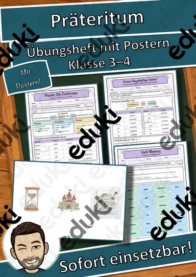
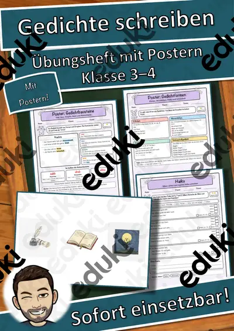
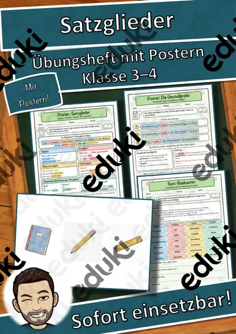
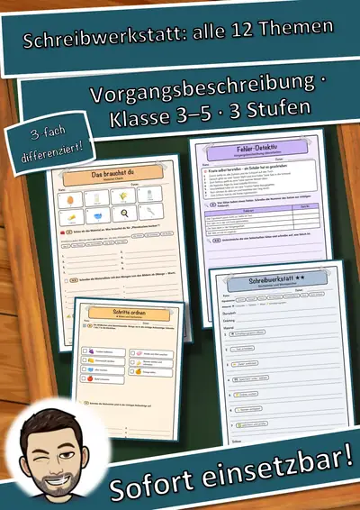
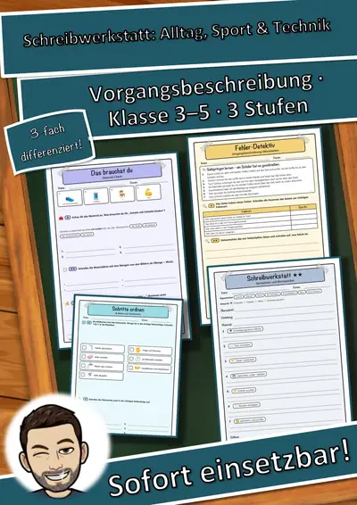
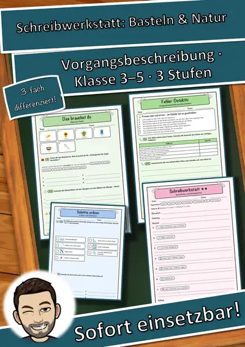
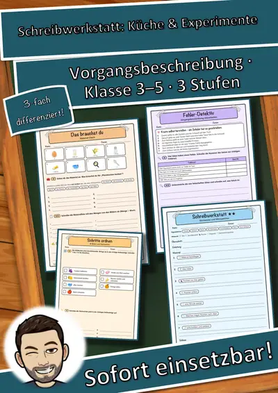

Papstwechsel - Bekanntgabe und erster Auftritt
Bekanntgabe und erster Auftritt
Mit diesem Material lernen Schüler*innen auf spannende Weise, was bei der Bekanntgabe eines neuen Papstes passiert. Sie erfahren, wie der neue Papst vorgestellt wird und welche Traditionen dabei eine Rolle spielen. Die Aufgaben fördern das Leseverständnis und die kritische Auseinandersetzung mit dem Thema.
Lernziele
Verstehen der Abläufe bei der Papstwahl und der Bekanntgabe.
Entwicklung von Lese- und Verständnisfähigkeiten durch gezielte Fragen.
Förderung der Fähigkeit, Informationen aus einem Text zu entnehmen und zu verarbeiten.
Stärkung des Interesses an religiösen Traditionen und deren Bedeutung.
Materialübersicht
Ein einführender Text über die Bekanntgabe des neuen Papstes.
Fünf Fragen, die das Textverständnis überprüfen.
Eine Lösungsvorlage für die Lehrkraft zur einfachen Auswertung.
Aufgaben
Die Schüler*innen lesen den Text aufmerksam und beantworten anschließend die Fragen:
Was ruft der Kardinal zur Verkündigung?
Wo tritt der neue Papst auf?
Was trägt der neue Papst?
Was spendet der neue Papst?
Wer jubelt dem neuen Papst zu?
Zusätzliche Informationen
Das Material ist ideal für den Einsatz im Religionsunterricht oder in fächerübergreifenden Projekten. Es regt zur Diskussion an und fördert das Verständnis für kulturelle und religiöse Themen.
Ähnliche Materialien

Präteritum – Übungsheft mit Postern, regelmäßige und unregelmäßige Verben Kl. 3–4

Gedichte schreiben – Übungsheft mit Postern, Kl. 3–4

Satzglieder – Übungsheft mit Postern, Umstellprobe, Fragen und Satz-Baukasten Kl. 3–4

Wörtliche Rede – Übungsheft mit Postern, Redebegleitsätzen und Comic-Dialogen Kl. 3–4

Schreibwerkstatt Vorgangsbeschreibung – Gesamtpaket: alle 12 Einheiten in 3 Stufen (Klasse 3–5)

Schreibwerkstatt Vorgangsbeschreibung – Paket Alltag, Sport & Technik: 4 Einheiten in 3 Stufen (Klasse 3–5)

Schreibwerkstatt Vorgangsbeschreibung – Paket Basteln & Natur: 4 Einheiten in 3 Stufen (Klasse 3–5)
